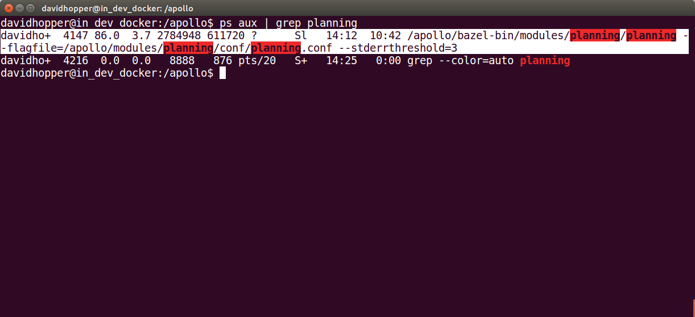
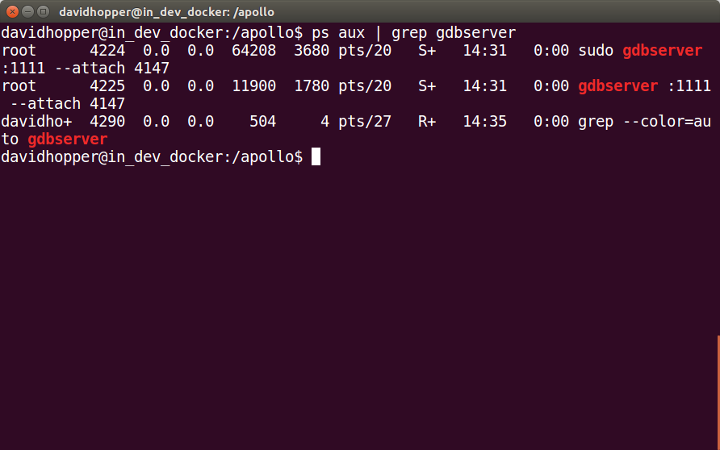
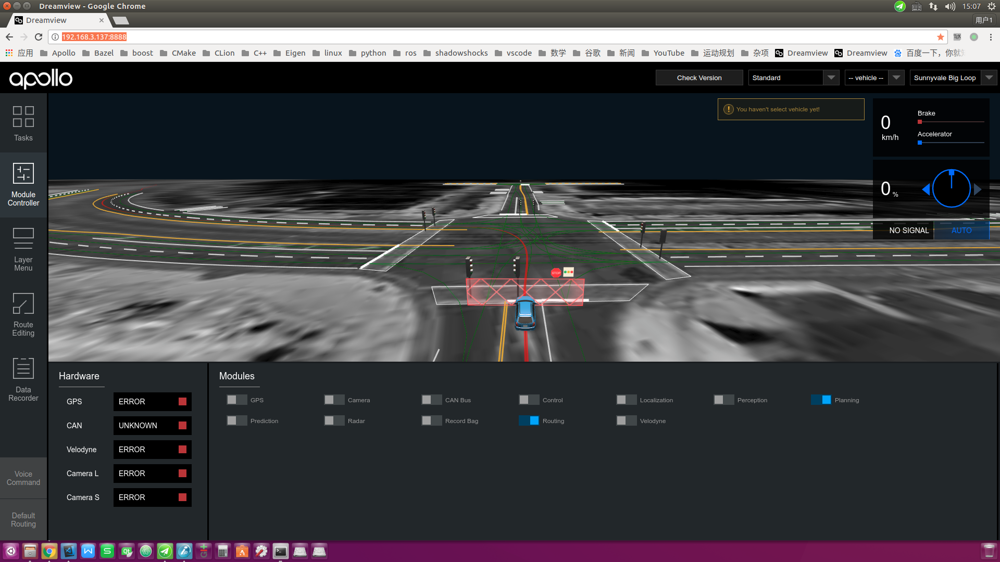

How to Debug Apollo
Debugging Apollo
The Apollo project runs in Docker and cannot be used directly on the host machine. It must be created in Docker with GDBServer. Debug the service process, and then use GDB to connect to the debug service process in Docker on the host machine. The specific operation methods are as follows:
Prerequisites
The main prerequisites contain collecting debugging information and installing the GDBServer if it is not already present in Docker
Collecting debugging information
When compiling Apollo projects, you will need to use debugging information options build_dbg. Optimization options such as build_opt or build_opt_gpu cannot be used.
Install GDBServer inside Docker
After entering Docker, you can use the following command to view if the GDBServer is present:
gdbserver --version
If the prompt is similar to the following information:
GNU gdbserver (Ubuntu 8.1-0ubuntu3.2) 8.1.0.20180409-git
Copyright (C) 2018 Free Software Foundation, Inc.
gdbserver is free software, covered by the GNU General Public License.
This gdbserver was configured as "x86_64-linux-gnu"
It means that GDBServer has been installed inside Docker. You should be able to view the prompt below. But if the GDBServer is not present and if you are prompted with the following information:
bash: gdbserver: command not found
Then you would need to install the GDBServer using
sudo apt-get -y update
sudo apt-get install gdbserver
Start the Dreamview daemon
Go to Docker and start Dreamview. The command is as follows:
cd ${APOLLO_ROOT_DIR}
# If Docker is not started, start it first, otherwise ignore this step
bash docker/scripts/dev_start.sh
# Enter Docker
bash docker/scripts/dev_into.sh
# Start Dreamview background service
bash scripts/bootstrap.sh
Start the module that needs to be debugged
Start the module to be debugged, either by using the command line or by using the Dreamview interface. The following is an example of debugging the Planning module from the Dreamview interface.
Open URL: http://localhost:8888/ in Chrome
On Dreamview, click on the SimControl slider, as shown below:

Click on the
Module Controlertab on the left toolbar and select theRoutingandPlanningoptions as shown below:

Click the
Default Routingtab on the left toolbar, selectRoute: Reverse Early Change Laneor any of these options, send aRouting Requestrequest, and generate a global navigation path, as shown below:

Viewing the “Planning” Process ID
Use the following command to view the “Planning” process ID:
ps aux | grep mainboard | grep planning
The result in the following figure is similar to the previous figure, you can
see that the Planning process ID is 4147.

Debugging Planning module using GDBServer
Next we need to carry out our key operations, using GDBServer to additionally
debug the Planning process, the command is as follows:
sudo gdbserver :1111 --attach 4147
In the command above, “:1111” indicates that the debugging service process with the port “1111” is enabled, and “4147” indicates the “Planning” process ID. If the result is as shown below, the operation is successful.

After restarting a terminal and entering Docker, use the following command to see if the “gdbserver” process is running properly:
ps aux | grep gdbserver

Starting GDBServer with a Script File
docker/scripts/dev_start_gdb_server.sh can start GDBServer directly on the
host (outside Docker).
Assuming that while debugging the planning module, the port number is 1111, the
usage of docker/scripts/dev_start_gdb_server.sh is:
# Start gdbserver directly on the host machine (outside Docker)
bash docker/scripts/dev_start_gdb_server.sh planning 1111
Possible Errors and their Solutions
During the debugging process, you may encounter the following problems:
the network connection is not smooth, can not be debugged
Solution
The solution is to ensure the network is smooth, and disable the agent tool
Remote debugging
During the R&D process, we also need to debug the Apollo project remotely on the industrial computer inside the vehicle, that is, connect the in-vehicle industrial computer with the SSH service on the debugging computer, start the relevant process in the industrial computer, and then perform remote debugging on the debugging computer. The following is an example of debugging the planning module:
View the IP address of the industrial computer in the car
On the industrial computer in the car, check the IP of the machine by the following command:
ifconfig
Open Dreamview in the browser of the debugging computer and start the module to be debugged
Assuming that the IP address of the industrial computer LAN is: 192.168.3.137,
open URL: http://192.168.3.137:8888/ on your machine and start the module (Planning) to debug as
shown in Start the module that needs debugging
section.

Use the SSH Command to Remotely Log In to the Industrial PC and Start the Gdbserver Service of the Industrial PC
Assume that the user name of the industrial computer in the car is xxxxx, and
the IP address of the LAN is 192.168.3.137. Use the following command to
remotely log in to the industrial computer:
ssh xxxxx@192.168.3.137
After successfully entering the IPC, assume that the Planning module needs to be debugged, and the port number is 1111, use the following command to start the gdbserver service of the in-vehicle IPC:
# Switch to the Apollo project root directory on the industrial computer
cd ~/code/apollo
# Start the gdbserver service outside of Docker
bash docker/scripts/dev_start_gdb_server.sh planning 1111
As shown in the figure below, if you see a prompt similar to Listening on port 1111, the gdbserver service starts successfully.